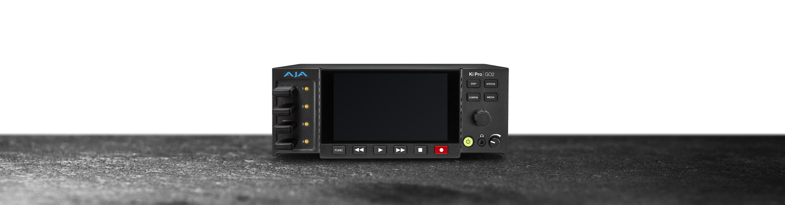

何本残す？
完成映像と各カメラ映像のうち、必要な収録を選ぶ。
撮る・録る・確かめる ↗EQUIPMENT / 18
複数映像の収録
複数のカメラ映像を、別々のファイルで残す。
KEY SPECIFICATIONS

画像を大きく見る ＋01 / ROLE & FLOW
02 / BEFORE YOUR BRIEF
完成映像と各カメラ映像のうち、必要な収録を選ぶ。
形式・画質・時間から記録容量とメディアを合わせる。
USBやネットワークへの冗長記録を含めて計画する。
03 / CHOOSING THE RIGHT TOOL
イベントの複数カメラ映像や完成映像を、後の編集・記録用に同時収録する構成に。
SDI4口・HDMI4口の計8入力端子がありますが、同時収録は最大4チャンネルです。4K収録機ではなく、再生は1チャンネルです。
旧Ki Pro GOとは別機種です。メーカー承認メディアの型式・条件を確認して選び、画像に写るUSBドライブが自動で付属するとは扱いません。標準電源は1台で、冗長電源用の追加アダプターは別に整理します。
同時収録数、入力端子、解像度・fps、収録時間、バックアップ、保存先と納品形式をお聞かせください。本体・周辺機材・搬入出・設営・本番操作・撤去を分けて、必要な範囲を整理します。